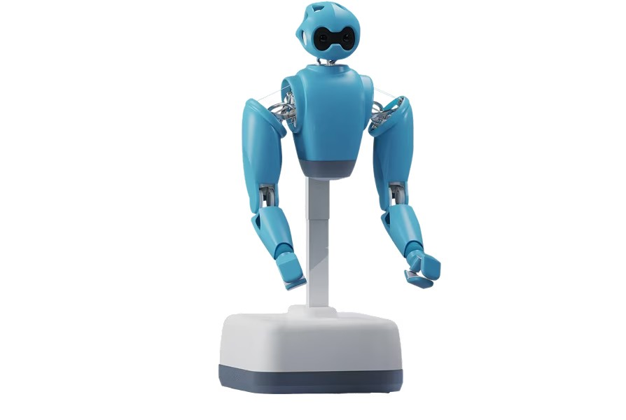

先把具体工序定义清楚
装配线上换一种线缆或零件，固定夹具与程序往往也要跟着改。AIR针对的是这类仍依赖人手、却又频繁重复的任务。用户先把具体工序、物料摆放和质量要求交给部署团队，在现场评估后开展小规模试点。输入不是一句笼统的“帮我装配”，而是可观察的操作示范和明确验收结果；输出也不应只是一段成功视频，而要包括完成的工件、失败记录和人工接管次数。厂商官网把试点、生产推广与持续支持分开，读者不必把发布会展示当成即买即用的通用工人。
Embodied AI AIR · 软硬结合／厂商发布

装配线上换一种线缆或零件，固定夹具与程序往往也要跟着改。AIR针对的是这类仍依赖人手、却又频繁重复的任务。用户先把具体工序、物料摆放和质量要求交给部署团队，在现场评估后开展小规模试点。输入不是一句笼统的“帮我装配”，而是可观察的操作示范和明确验收结果；输出也不应只是一段成功视频，而要包括完成的工件、失败记录和人工接管次数。厂商官网把试点、生产推广与持续支持分开，读者不必把发布会展示当成即买即用的通用工人。
AIR采用轮式移动底座，手臂以腱索驱动，较重的电机、齿轮箱及电子部件放在躯干内。厂家希望降低运动端惯量，让接触时的机械顺应性成为设计的一部分，而不是只靠软件限速。官网另列出柔软外层、柔顺关节及高频感知，但没有给出本次可独立核验的完整碰撞测试数据。轮子适合平整工厂地面，也把台阶、沟槽和地面障碍留给场地设计。它不是为模仿人的所有动作而选择形态；在手必须灵巧、脚下环境较规整的岗位，双臂加轮子的组合更直接对应工作要求。
厂商描述的上岗路径从人工遥操作开始：每次执行留下记录，模型从现场示范学习，之后逐步自主执行；遇到陌生情况，操作员仍可介入。官网说明紧凑的多模态策略由视觉语言模型编排，并在机器人上运行。这里省下的目标是重复示教和持续操作，而不是立刻取消值守。评估时应分开统计自主完成、等待操作员、人工纠错和恢复原任务的时间，否则把有人远程接管的结果算成完全自主，会掩盖真实服务成本。换班时谁承担例外处理，也应写进实际操作规程，而不只写在技术路线里。
十一月六日通稿宣告AIR，并称其正在与制造企业测试；它提到的线缆任务可靠性结果来自既有双臂工业工作站，不应移植成AIR整机的同等表现。设计参照协作机器人相关规范与已经完成认证也不同，通稿将CE标记列为二〇二七年的计划。产品价格、批量交付时间和现场接管服务费没有在本次材料中确认。较合理的采用起点是一道边界清楚的工序：保留原来的人工处理办法，按实际不良品、停机和介入记录决定是否扩大。若频繁换料后仍要长时间遥操作，机械形态再友好也未必降低整线成本。